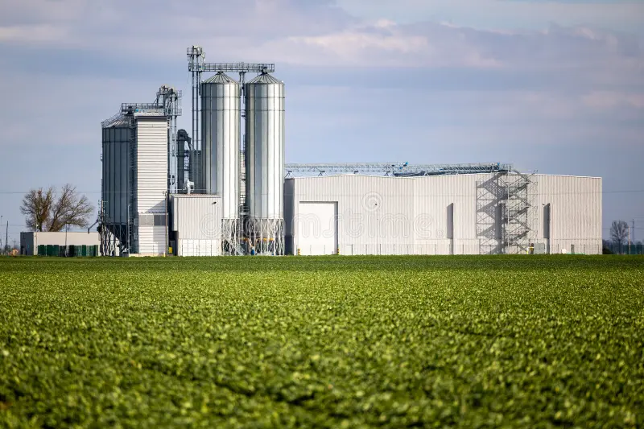
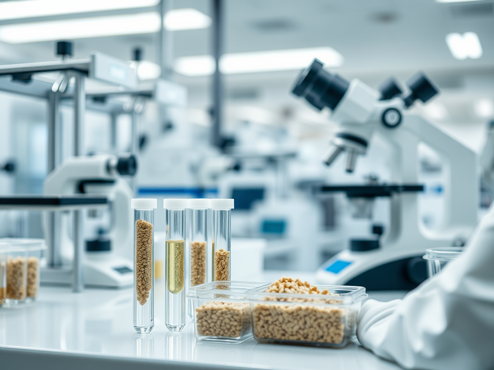

01
Feed Ingredients
Carefully selected feed ingredients designed to support livestock nutrition and performance.
Building reliable nutrition solutions for healthier livestock, stronger businesses and sustainable growth.
SIA AGRO is committed to providing reliable feed ingredients and nutrition solutions that support better livestock performance and sustainable agricultural growth.
We focus on quality, consistency and dependable supply to help our customers build healthier and more productive operations.
Our approach combines product knowledge, reliable sourcing and a strong focus on customer requirements.

Carefully selected feed ingredients designed to support livestock nutrition and performance.

Dependable sourcing and supply focused on consistency and customer needs.

A strong commitment to quality, consistency and responsible practices.
We believe quality is the foundation of every successful partnership. From sourcing to delivery, our focus remains on consistency, reliability and customer satisfaction.
To become a trusted partner in agricultural and animal nutrition solutions while contributing to sustainable growth across the industry.
To deliver reliable products, consistent quality and professional service that create long-term value for our customers and partners.
Get in touch with SIA AGRO to discuss your feed ingredient and nutrition requirements.
Contact Us →